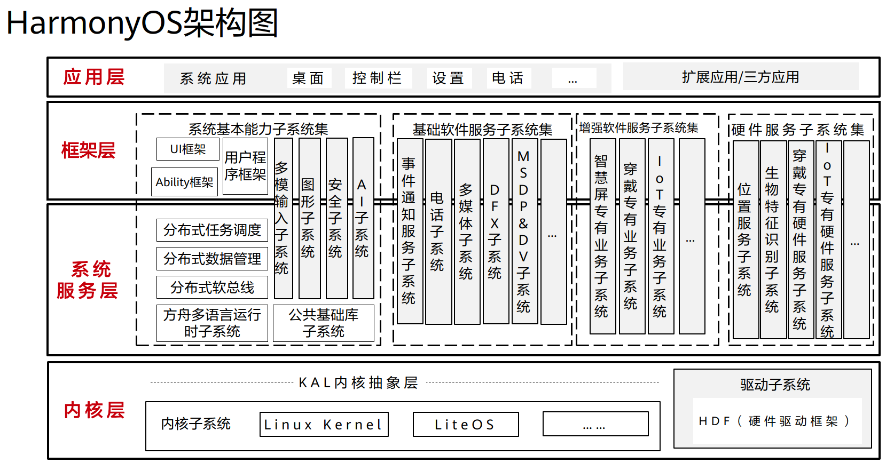
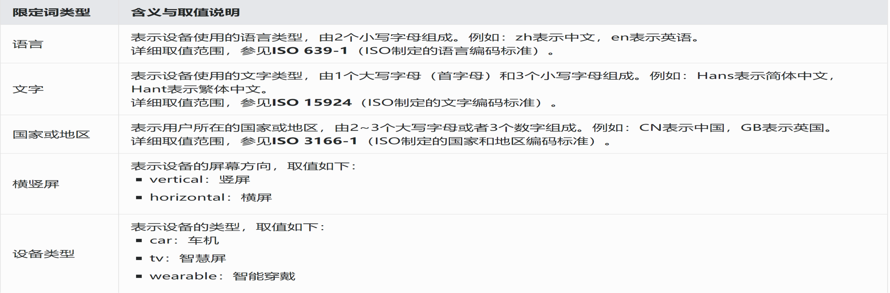
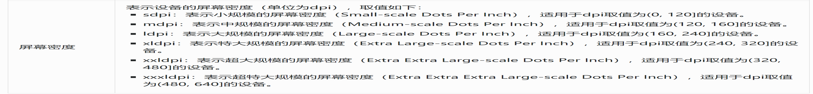
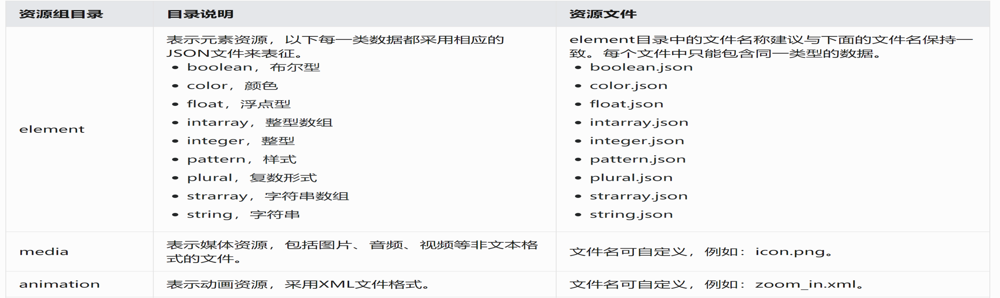
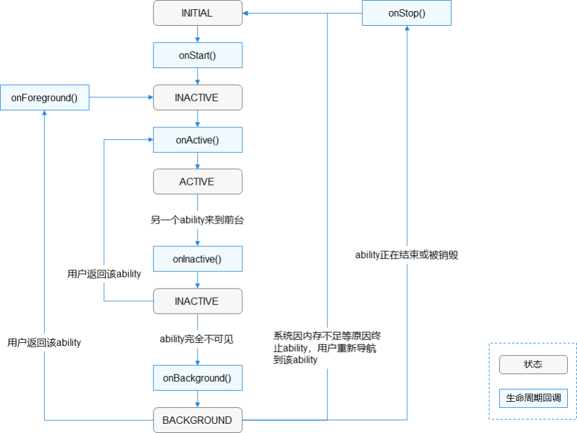
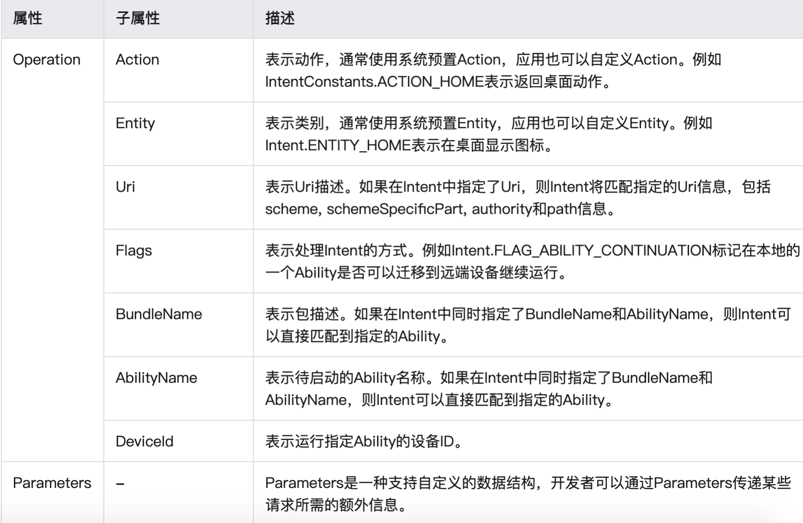
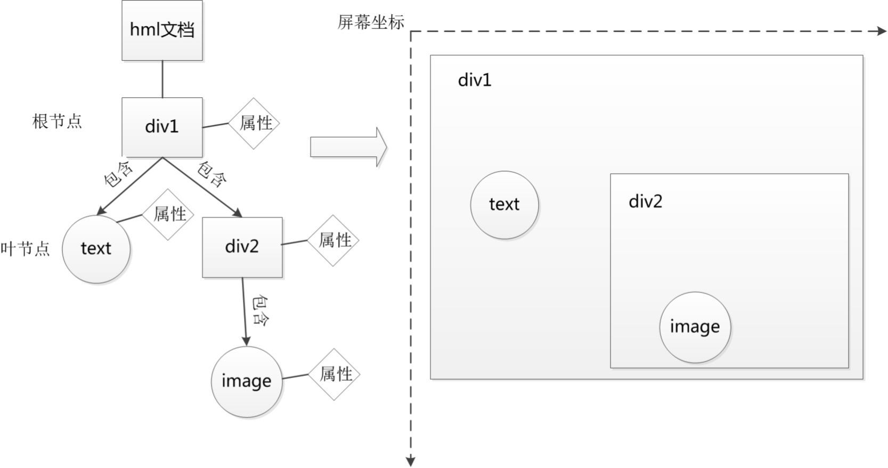
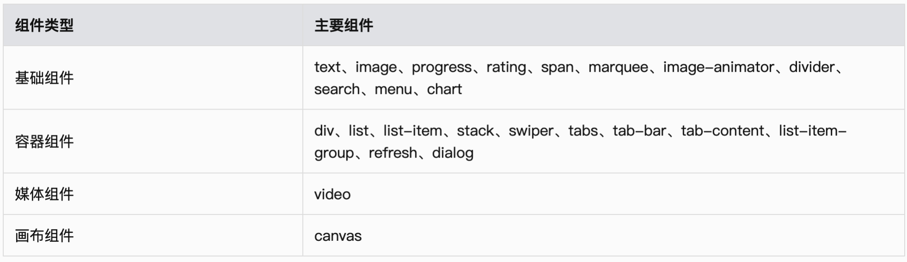

2021山东大学-HarmonyOS移动应用开发学习笔记（暂停更新）
初识HarmonyOS
HarmonyOS架构与安全
HarmonyOS架构图

HarmonyOS至少应该包含一个FA，FA有用户界面，PA无用户界面。
在搭载HarmonyOS的分布式终端上，可以保证“正确的人，通过正确的设备，正确地使用数据”。
- 通过“分布式多端协同身份认证”来保证“正确的人”；
- 通过“在分布式终端上构筑可信运行环境”来保证“正确的设备”；
- 通过“分布式数据在跨终端流动的过程中，对数据进行分类分级管理”来保证“正确地使用数据”。
在必须传输用户的敏感数据（如密钥、加密的生物特征等信息）时，会在使用设备证书进行安全环境验证后，建立从一个设备的TEE到另一设备的TEE之间的安全通道，实现安全传输。
DevEco Studio介绍
项目文件解析
- .gradle：Gradle配置文件，由系统自动生成，一般情况下不需要进行修改。
- entry：默认启动模块（主模块），开发者用于编写源码文件以及开发资源文件的目录。
entry>libs：用于存放entry模块的依赖文件；
entry>src>main>Java：用于存放Java源码；
entry>src>main>resources：用于存放应用所用到的资源文件，如图形、多媒体、字符串、布局文件等。
entry模块结构
- entry>src>main>config.json：HAP清单文件；
- entry>src>test：编写代码单元测试代码的目录，运行在本地Java虚拟机（JVM）上；
- entry>.gitignore：标识git版本管理需要忽略的文件；
- entry>build.gradle：entry模块的编译配置文件。
页面文件解析
- js>defalut>common目录：可选，用于存放公共资源文件，如媒体资源、自定义组件和JS文档等；
- js>defalut>i18n目录：可选，用于存放多语言的json文件，可以在该目录下定义应用在不同语言系统下显示的内容，如应用文本词条、图片路径等；
- js>defalut>resources：可选，用于存放资源配置文件，比如：全局样式、多分辨率加载等配置文件；
- js>defalut>app.js文件：全局的JavaScript逻辑文件和应用的生命周期管理。
pages目录结构
- pages目录：pages文件夹下可以包含1个或多个页面，每个页面都需要创建一个文件夹（如图中的index）。页面文件夹下主要包含3种文件类型：.css、.js和.hml文件；
- pages>index>index.hml文件：hml文件定义了页面的布局结构，使用到的组件，以及这些组件的层级关系；
- pages>index>index.css文件：css文件定义了页面的样式与布局，包含样式选择器和各种样式属性等；
- pages>index>index.js文件：js文件描述了页面的行为逻辑，此文件里定义了页面里所用到的逻辑关系，比如数据、事件等。
JS Component和JS Page
- JS Component：在JS工程中，可以存在多个JS Component（例如js目录下的default文件夹就是一个JS Component），一个JS FA对应一个JS Component，可以独立编译、运行和调试。
- JS Page：Page是表示JS FA的一个前台页面，由.js、.hml和.css文件组成，是Component的最基本单元，构成了JS FA的每一个界面。
HarmonyOS开发基础
APP
APP包组成
- 一个HAP是由代码、资源、第三方库及应用配置文件组成的模块包，可分为entry和feature两种模块类型。
- entry：应用的主模块。一个APP中，对于同一设备类型必须有且只有一个entry类型的HAP，可独立安装运行；
- feature：应用的动态特性模块。一个APP可以包含一个或多个feature类型的HAP，也可以不含。只有包含Ability的HAP才能够独立运行。
- HAP是由一个或多个Ability组成。
Ability
pack.info
描述应用软件包中每个HAP的属性，由IDE编译生成，应用市场根据该文件进行拆包和HAP的分类存储。
资源文件
应用的资源文件（字符串、图片、音频等）统一存放于resources目录下，便于开发者使用和维护。resources目录包括base目录与限定词目录。
限定词目录
限定词目录可以由一个或多个表征应用场景或设备特征的限定词组合而成，包括语言、文字、国家或地区、横竖屏、设备类型和屏幕密度等六个维度，限定词之间通过下划线（_）或者中划线（-）连接。开发者在创建限定词目录时，需要掌握限定词目录的命名要求以及与限定词目录与设备状态的匹配规则。



配置文件
应用的每个HAP的根目录下都存在一个“config.json”配置文件，文件内容主要涵盖以下三个方面：
- 应用的全局配置信息，包含应用的包名、生产厂商、版本号等基本信息；
- 应用在具体设备上的配置信息，包含应用的备份恢复、网络安全等能力；
- HAP包的配置信息，包含每个Ability必须定义的基本属性（如包名、类名、类型以及Ability提供的能力），以及应用访问系统或其他应用受保护部分所需的权限等。
应用的配置文件“config.json”中由“app”、“deviceConfig”和“module”三个部分组成，缺一不可。
配置文件合并规则
- HAP与HAR的“config.json”文件合并时，需要将HAR的配置信息全部合并到HAP的配置文件。系统定义了详细的合并规则；
- HAP的优先级总是高于HAR。当HAP依赖于多个HAR时，先加载的HAR的优先级高于后加载的HAR，按照HAR的加载顺序依次合并到HAP文件。
HAR
Module是HarmonyOS应用的基本功能单元，包含了源代码、资源文件、第三方库及应用清单文件，每一个Module都可以独立进行编译和运行。一个HarmonyOS应用通常会包含一个或多个Module，因此，可以在工程中，创建多个Module，每个Module分为Ability和Library（HarmonyOS Library和Java Library）两种类型。
HarmonyOS核心概念
Ability
Ability是HarmonyOS应用程序的重要组成部分，分为FA（Feature Ability）和PA（Particle Ability）两种类型：
- FA支持Page Ability：Page模板是FA唯一支持的模板，用于提供与用户交互的能力。
- PA支持Service Ability和Data Ability：Service模板用于提供后台运行任务的能力；Data模板用于对外部提供统一的数据访问抽象。
Page Ability
一个Page可以由一个或多个AbilitySlice构成，AbilitySlice是指应用的单个页面及其控制逻辑的总和。
AbilitySlice路由配置
虽然一个Page可以包含多个AbilitySlice，但是Page进入前台时界面默认只展示一个AbilitySlice。默认展示的AbilitySlice是通过setMainRoute()方法来指定的。如果需要更改默认展示的AbilitySlice，可以通过addActionRoute()方法为此AbilitySlice配置一条路由规则。此时，当其他Page实例期望导航到此AbilitySlice时，可以在Intent中指定Action。
生命周期

ServiceAbility
Service可由其他应用或Ability启动，即使用户切换到其他应用，Service仍将在后台继续运行。
Service是单实例的。在一个设备上，相同的Service只会存在一个实例。
Intent
Intent是对象之间传递信息的载体。例如，当一个Ability需要启动另一个Ability时，或者一个AbilitySlice需要导航到另一个AbilitySlice时，可以通过Intent指定启动的目标同时携带相关数据。Intent的构成元素包括Operation与Parameters。

如果FA1启动了FA2，且FA1需要向FA2中进行数据传递，以控制FA2的显示内容，这时可以通过Intent对象来携带数据。
JS基础语法
HML语法
页面结构
HML文件中采用类似html定义页面元素的方法定义APP页面组成，JS UI框架处理该代码时会生成页面的文档对象模型（Document Object Model，DOM）。通过DOM，JS能够动态处理HML文件中包含的内容，结构和样式。

数据绑定
可以在HML文件中需要进行数据后续设置和变更的地方进行数据绑定操作。
1 | <div> |
这里text文本框的内容在HML文件中是没有设置的。其数据来自于JS文件。
1 | export default { |
事件绑定
在移动应用中，页面元素经常要与用户交互，交互的主要方式是手指的触摸事件，对触摸事件的响应。事件通过’on’或者‘@’绑定在组件上，当组件触发事件时会执行JS文件中对应的事件回调函数。
1 | <div class="container"> |
列表渲染
移动应用页面中经常需要对一类相同的元素进行显示，如联系人，图片库等，可以使用列表渲染方法。
1 | <div class="array-container"> |
条件渲染
条件渲染分为2种：if/elif/else和show。这两种方式都可以控制组件的显示。两种写法的区别在于：第一种写法里if为false时，组件不会在vdom中构建，也不会渲染，而第二种写法里show为false时虽然也不渲染，但会在vdom中构建；另外，当使用if/elif/else写法时，节点必须是兄弟节点，否则编译无法通过。
1 | <text if="{{showit}}"> Hello-TV </text> |
CSS语法
尺寸单位
定义组件样式。用逻辑像素和百分比定义组件恰当的位置。
- 逻辑像素px：默认屏幕具有的逻辑宽度为720px（手机屏幕），如100px在实际宽度为1440物理像素的屏幕上，实际渲染为200物理像素
- 百分比：.css文件中通常以%表示，表示该组件占父组件尺寸的百分比。
样式选择器
CSS选择器用于选择需要添加样式的元素
|选择器|样例|样例描述|
|:-:|:-:|:-:|
|.class|.container|用于选择class=”container”的组件。|
|#id|#titleId|用于选择id=”titleId”的组件。|
|tag|text|用于选择text组件。|
|,|.title,.content|用于选择class=”title”和class=”content”的组件。|
|.class tag|.content text|选择具有class=”content”行为的所有text组件。|
当多条选择器声明匹配到同一元素时，各类选择器优先级由高到低顺序为：内联样式 >id > class > tag。优先级高的选择器样式设置会覆盖优先级低的选择器样式，同级的选择器后面的样式会覆盖前面的样式。
组件样式的生命除了用单独的.css文件外，也可以直接定义在.hml文件中
1 | <div class="container"> |
CSS伪类
CSS伪类是选择器中的关键字，用于指定要选择元素的特殊状态。
| 名称 | 支持组件 | 描述 |
|---|---|---|
| :disabled | 支持disabled属性的组件 | 表示disabled属性变为true时的元素。 |
| :focus | 支持focusable属性的组件 | 表示获取focus时的元素。 |
| :active | 支持click事件的组件 | 表示被用户激活的元素，如：被用户按下的按钮、被激活的tab-bar页签。 |
| :checked | input[type=”checkbox”、type=”radio”]、switch | 表示checked属性为true的元素。 |
JS语法
应用对象为$app，其属性包括$def，该属性为Object类型，可以使用this.$app.$def获取在app.js中暴露的对象。
HarmonyOS JS UI前端开发
JS前端开发基础
JS UI框架是一种跨设备的高性能UI开发框架，支持声明式编程和跨设备多态UI。
JS FA
AceAbility类是JS FA在HarmonyOS上运行环境的基类，继承自Ability。开发者的应用运行入口类应该从该类派生。
- JS FA生命周期事件分为应用生命周期和页面生命周期，应用通过AceAbility类中setInstanceName()接口设置该Ability的实例资源，并通过AceAbility窗口进行显示以及全局应用生命周期管理。
- setInstanceName(String name)的参数”name”指实例名称，实例名称与config.json文件中module.js.name的值对应。
- 若开发者未修改实例名，而使用了缺省值default，则无需调用此接口。若开发者修改了实例名，则需在应用Ability实例的onStart()中调用此接口，并将参数“name”设置为修改后的实例名称。
构建用户界面
组件
组件（Component）是构建页面的核心，每个组件通过对数据和方法的简单封装，实现独立的可视、可交互功能单元。组件之间相互独立，随取随用，也可以在需求相同的地方重复使用。开发者还可以通过组件间合理的搭配定义满足业务需求的新组件。

组件通用属性
通用属性包含常规属性和渲染属性。常规属性指的是组件普遍支持的用来设置组件基本标识和外观显示特征的属性。在前端设计中组件最关键的问题是如何将组件在屏幕中显示出来，就是要定义它的大小和位置关系。
组件通用事件
事件绑定在组件上，当组件达到事件触发条件时，会执行JS中对应的事件回调函数，实现页面UI视图和页面JS逻辑层的交互。对HarmonyOS系统来说，事件主要为手势事件和按键事件。手势事件主要用于智能穿戴等具有触摸屏的设备，按键事件主要用于智慧屏设备。
页面元素
一个页面的基本元素包含标题区域、文本区域、图片区域等，每个基本元素内还可以包含多个子元素，开发者根据需求还可以添加按钮、开关、进度条等组件。在构建页面布局时，需要对每个基本元素思考以下几个问题：
- 该元素的尺寸和排列位置；
- 是否有重叠的元素；
- 是否需要设置对齐、内间距或者边界；
- 是否包含子元素及其排列位置；
- 是否需要容器组件及其类型。
动画
静态动画
静态动画的核心是transform样式，主要可以实现以下三种变换类型，一次样式设置只能实现一种类型变换。
- translate：沿水平或垂直方向将指定组件移动所需距离；
- scale：横向或纵向将指定组件缩小或放大到所需比例；
- rotate：将指定组件沿横轴或纵轴或中心点旋转指定的角度。
连续动画
连续动画的核心是animation样式，它定义了动画的开始状态、结束状态以及时间和速度的变化曲线。通过animation样式可以实现的效果有：
- animation-name：设置动画执行后应用到组件上的背景颜色、透明度、宽高和变换类型；
- animation-delay和animation-duration：分别设置动画执行后元素延迟和持续的时间；
- animation-timing-function：描述动画执行的速度曲线，使动画更加平滑；
- animation-iteration-count：定义动画播放的次数；
- animation-fill-mode：指定动画执行结束后是否恢复初始状态。
用户交互
事件主要包括手势事件和按键事件。手势事件主要用于智能穿戴等具有触摸屏的设备，按键事件主要用于智慧屏设备。
多模输入
- 多模输入使HarmonyOS的UI控件能够响应多种输入事件，事件来源于用户的按键、点击、触屏、语音等。提供创建事件能力和获取输入设备信息能力。
- 多模输入的接口设计是基于多模事件基类（MultimodalEvent），派生出操作事件类（ManipulationEvent）、按键事件类（KeyEvent）、语音事件（SpeechEvent）等，另外提供创建事件类和获取输入设备信息类。
JS FA调用PA
- JS UI框架提供了JS FA（Feature Ability）调用Java PA（Particle Ability）的机制，该机制提供了一种通道来传递方法调用、数据返回以及订阅事件上报。
- 当前提供Ability和Internal Ability两种调用方式，开发者可以根据业务场景选择合适的调用方式进行开发。
- Ability：拥有独立的Ability生命周期，FA使用远端进程通信拉起并请求PA服务，适用于基本服务供多FA调用或者服务在后台独立运行的场景；
- Internal Ability：与FA共进程，采用内部函数调用的方式和FA进行通信，适用于对服务响应时延要求较高的场景。该方式下PA不支持其他FA访问调用。
 支付宝
支付宝